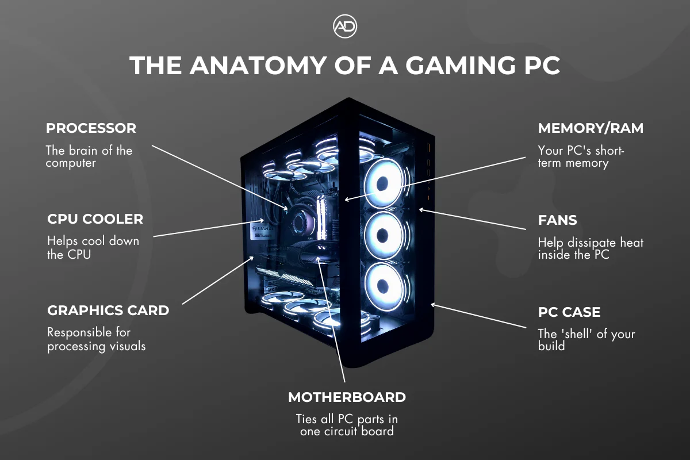

PC Basics (the stuff I wish someone explained to me first)
Okay so—I am not a professional builder or a reviewer with a lab. I am just someone who got curious, watched a lot of videos, poked around on build sites, and slowly figured out what all the boxes at the store actually mean. This page is me talking to “past me”: a total beginner who only knew the computer turned on and sometimes made game go brrr.
A PC is basically a team of parts that have to agree with each other. If one part is the wrong shape, uses the wrong kind of memory, or needs more power than your supply can give, things get annoying fast. So you do not have to memorize model numbers on day one— you just have to know what each type of part is responsible for, and what questions to ask when you pick one.
Websites and places that actually helped me
I spent a lot of time on these. Yours might be different, but this is my honest list. (Anything that opens in a new tab is so you do not lose this page by accident.)
- PCPartPicker — This was my home base. You pick parts, it flags a bunch of compatibility problems for you, you can peek at other people’s builds, and the price list is at least a rough reality check. I used it to learn what even exists before I bought anything.
- Logical Increments — Super simple “if your budget is around this, you are roughly in this tier” energy. It is not the law, but it helped me stop feeling lost in the ocean of part numbers.
- r/buildapc on Reddit — People post full parts lists and get feedback. I lurked, read the comments where someone said “that PSU is fine” or “you might want more RAM for that,” and it slowly made sense. Don’t be scared to use the search bar—99% of beginner questions were asked before.
- Linus Tech Tips (YouTube) — I learned a lot from their build guides and “how does this work” style videos. Not the only channel out there, but a decent rabbit hole.
- CPU benchmark list (PassMark) — When two CPUs looked identical to me, I used this to get a very rough idea of which one is stronger. It is not perfect real-world testing, but it is a start.
- TechPowerUp GPU database — Helpful for checking card length, power plug situation, and basic specs when I was shopping for a graphics card.
Big-picture: what happens when you press the power button
Super short version: the PSU feeds power everywhere. The motherboard is the table everyone sits at. The CPU does a ton of the thinking and “do math now” work. RAM holds the stuff the CPU needs right this second. Storage holds your files and games for the long term (slower to grab than RAM, but it does not forget when you turn off). The GPU is extra muscle for 3D graphics and a lot of game-type workloads. The case holds it all, and fans / cooling stop everything from cooking itself. That is the team.
The diagram below is a labeled gaming PC—a quick map of what lives where before we zoom in on each part. (Your own case might look a little different, but the ideas are the same.)

Image from Alex Davis PCs — Gaming PC components explained.
CPU (processor)
People call it the “brain” of the PC, which is cheesy but it works. It runs the operating system and does most of the general crunching. For gaming, a mid-range CPU is often enough if your graphics card is the real heavy lifter; for stuff like video editing, streaming while gaming, or heavy multitasking, a stronger CPU with more cores can matter more.
Brand-wise you have mainly Intel and AMD right now. I am not here to start a war— both can be fine. What mattered to me in practice: the CPU socket and chipset have to match the motherboard you buy (so you are not shoving the wrong “shape” into the board).
Words you will see a lot
- Cores / threads — Think “how many things can this thing juggle at once?” More is not always automatically better for every person, but it helps for heavy workloads.
- Clock speed (GHz) — How fast it ticks through work, roughly. Not the only thing that matters, so do not get hypnotized by one big number.
You usually need thermal paste between the CPU and the cooler (sometimes it is pre-applied on a stock cooler, sometimes you add a tiny bit yourself). The CPU also sits in a socket on the motherboard—there is a correct way to line up the little triangle, and you should never shove it.
Image placeholder — e.g. CPU in the socket, or stock cooler, or a close-up of the triangle mark you line up with.
Tip: When you are new, write down the exact CPU model you bought and double-check the motherboard’s “CPU support” list on the manufacturer’s site. “This board usually works with this family” is not the same as “my specific chip works out of the box.” I learned that the slightly annoying way.
Motherboard
Everything else plugs into this. It is not just a dumb slab of plastic—it has the chipset that controls what the PC can do (how many fast USB ports, how many drives, that kind of thing). I used to think “a motherboard is a motherboard” but the size and the ports actually matter a lot.
Size (form factor)
Common names: ATX (bigger, more room for slots), Micro-ATX (smaller, still pretty common), ITX (tiny builds—cute, but you fight for space). Your case has to match the size you pick. PCPartPicker helps with that kind of “oops these don’t fit” moment.
What I checked before I bought
- CPU socket type matches my processor.
- Enough RAM slots for what I want (if I only buy two sticks now, can I add two more later?).
- How many M.2 slots for NVMe drives (those are the little fast SSDs that screw down flat).
- Onboard Wi-Fi or will I add a card / use ethernet?
Image placeholder — a labeled board (CPU socket, RAM slots, M.2, etc.) is perfect here.
Tip: The little metal rear I/O shield that comes with the board? It goes on the back of the case before you wiggle the motherboard in. If you forget, you get to do the build twice. (Yes, I am speaking from the voice of experience.)
RAM (memory)
This is the computer’s short-term memory—the stuff you are using right now, like browser tabs, the game, Discord, and whatever else is open. If you do not have enough RAM, the PC starts dumping work to the drive instead, and everything feels like it is moving through mud.
A lot of people say 16GB is a good starting point for a modern gaming PC, and 32GB if you leave a million tabs open, stream, or do creative work. You can get away with 8GB for super light use, but I would not build a new gaming PC on 8GB today.
Speed and the “right kind”
RAM comes in generations (like DDR4 vs DDR5). The motherboard and CPU have to support the one you buy—you cannot just mix and match willy-nilly. You will also see a speed number (MHz). Faster can help a bit in some cases, but being “compatible and stable” matters more to me as a beginner than squeezing out the last 2% on a chart I do not understand yet.
If you have more than one stick, dual channel (usually two matched sticks in the right slots) can give a nice bump over a single stick. The motherboard manual shows which two slots to use first.
You might see XMP or EXPO in the BIOS—the short version is “your RAM might run at its rated speed after you turn this profile on.” I was scared of the BIOS at first, but it is mostly just menus. Take your time.
Image placeholder — a photo of two RAM modules, or a screenshot of a PCPartPicker compatible RAM pick.
Tip: Buying one giant stick feels simple, but two matched sticks is often the smarter move for the money if your board has four slots. Check the board manual for “A2/B2” type guidance.
Storage (SSD, NVMe, HDD)
Storage is where your stuff lives when the PC is off—Windows, games, photos, that folder of homework, all of it. RAM forgets when you shut down. Storage does not (unless it dies, which is why backups exist—anyway, not trying to scare you, just being honest).
Types in plain language
- HDD (hard drive) — Spinning disk. Cheap per gigabyte, fine for big cold storage, slower. I still use one for “stuff I rarely touch.”
- SATA SSD — No moving parts, way faster than an HDD, connects with a cable to the motherboard. A solid middle ground.
- NVMe (M.2) — The small stick that slots straight into the motherboard. Usually the fastest and cleanest. Great for your main boot drive where Windows lives.
Size-wise, 500GB to 1TB is a common place to start for the main drive if you play a few big games. If you are the kind of person who installs everything “just in case,” plan for more. Games got huge while we were not looking.
Image placeholder — compare an HDD vs a SATA SSD vs an NVMe stick side by side if you can.
Tip: If your budget is tight, a smaller NVMe for Windows + a big HDD for game storage is a classic combo. I did that early on. Just know load times in games on the HDD will be slower. Tradeoffs.
GPU (graphics card)
If the CPU is the brain for general work, the GPU is the part that shoves pixels at your monitor for games, 3D work, and a bunch of video stuff. A lot of game performance comes down to “how good is this card,” especially at higher resolutions. Integrated graphics (GPU built into the CPU) can play some lighter games, but a dedicated card is the usual move for a gaming build.
What I looked at
- VRAM — Memory on the card itself. More helps at higher settings and resolution. I kept seeing “8GB is a common sweet spot for 1080p” style advice, but it depends on the game and year.
- Length and thickness — Big cards exist. I measured my case and checked TechPowerUp for the exact length so I was not doing cardboard surgery on my build day.
- Power connectors — Some want one 8-pin, some want two, some want three. The PSU has to have the right cables (or you use what the manufacturer provides—don’t improvise with random cables).
Keep your graphics drivers updated in a normal way (NVIDIA / AMD’s official tools, or Windows if you are on integrated). You do not have to update every single Tuesday, but if something feels broken in a new game, drivers are a classic first “did you try this” step.
Image placeholder — a GPU in your hand or installed in a machine, to show the size.
Tip: The used GPU market is a whole emotional roller coaster. If you buy used, ask yourself if the price still makes sense vs a newer entry-level card, and be careful of cards that were run hard for mining 24/7. I am not saying “never”—I am saying “ask questions and Google the seller if it feels off.”
PSU (power supply)
This box converts wall power into something your PC can eat safely. It is the part people joke about “don’t skimp on,” and honestly, that advice stuck with me. A bad or dying PSU can be annoying at best and dangerous at worst. I was nervous picking one, so I read comments and cross-checked wattage on PCPartPicker a lot.
Wattage
You want enough headroom so the PSU is not screaming at 100% all day. PCPartPicker shows an estimated wattage; I personally liked having some buffer for upgrades (especially a beefier GPU later).
Ratings and cables
You will see 80 Plus labels (Bronze, Gold, etc.)—that is mostly about efficiency, not a guarantee the unit is perfect, but it is a starting point when you are lost in a list. Modularity is about the cables: non-modular = all cables attached, semi-modular = common stuff fixed, fully modular = you plug in only what you need. Cleaner builds like modular for cable management, but you pay a bit more.
Image placeholder — the PSU in the case, or a photo of the label with wattage visible.
Tip: If a deal looks too good to be true for a “750W 80+ Gold” from a name I never heard of, I slow down and read actual reviews. There are decent budget units, but “random fire hazard” is not the aesthetic we want for the dorm desk.
Case (the chassis)
It holds the parts, but it is not just a box for aesthetics. Airflow (can air actually move through?) and room to build (can my hands fit without swearing for three hours?) were bigger deals than RGB for me, personally. I like a clean look, but I like not thermal-throttling more.
Check: motherboard size support, GPU max length, CPU cooler height, how many fan spots there are, and where dust filters live. A lot of that is on the manufacturer’s product page.
Image placeholder — your empty case, or a side view with panels off.
Tip: Building in a very small ITX case looks cool in videos, but for a first build, a slightly roomier case saved my sanity. You can still make it look nice with cable ties and a little patience.
Cooling and fans
Parts get hot. If they get too hot, the PC slows down on purpose to protect itself (throttling) or, in a worst case, bad things happen. So you need a plan: usually a CPU cooler (the metal tower or little AIO water block) and a few case fans to move air in and out.
Air vs AIO (water-style cooler)
Big air coolers are simple and reliable. AIOs can look super clean in a case with a window, but you have to think about radiator size and where it mounts. I am not an expert on custom loops— this is still “first build” level talk.
Airflow without overthinking it
A simple idea that helped me: you generally want a path for air—often front / bottom in and top / back out—and you try not to block everything with a carpet or a wall. Your exact fan count depends on the case, but you do not have to be a fluid dynamics professor on day one.
Image placeholder — your fan layout, or a close-up of the CPU cooler.
Tip: Dust happens. I try to look at the front filter once in a while. Sounds silly, but a clogged front panel made my old machine run louder than it needed to.
Small extras worth knowing (not glamorous, but real)
- Thermal paste — A small pea or line depending what the cooler says. More paste is not better. There are a million YouTube takes; pick one method and don’t stress forever.
- Static electricity — Touch something metal in the room before poking the motherboard if you are nervous. I am not a scientist; I am just a person who does not want to zap a pricy component.
- Cable management — Takes time, makes upgrades easier, and can help airflow a little. Zip ties are your friend. Don’t cut yourself on the case edges—some of those sheet metal bits are sharp.
- Monitor and cables — Your GPU has specific ports; your monitor needs a matching cable (DisplayPort and HDMI are common). Make sure you plug the monitor into the GPU, not only the motherboard, if you have a dedicated card—classic first-boot confusion.
If you are shopping part by part, I still think keeping a PCPartPicker list updated is one of the best habits. When someone asks you “what are your specs?”, you can actually answer without digging through order emails. Ask me how I know.
You already made it to the end of this long page, so you are doing better than “I will figure it out never.” If something here sounds wrong a year from now, that is okay—tech moves fast, and the goal is to feel less lost, not to memorize Wikipedia. Good luck with your list, and have fun with the build (and maybe a snack break in the middle).